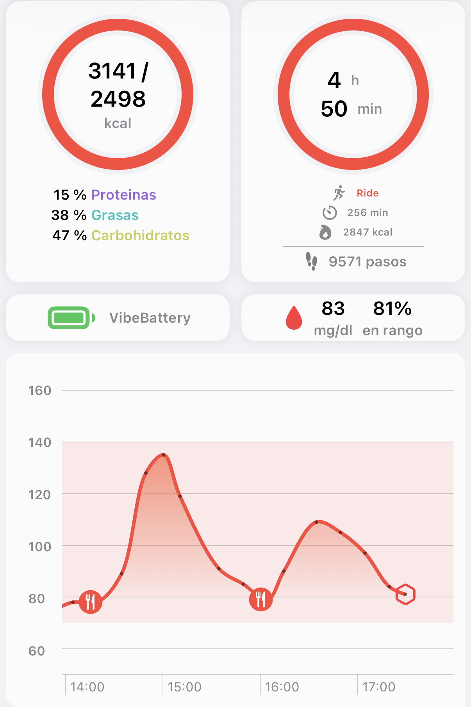

Mitos con datos
«Me lo he ganado»… y el pico llega igual.
Entrenar no te libra del pico si llegas a casa vacía.
Desliza →
Hacemos visible lo invisible
Entrenar no te libra del pico si llegas a casa vacía.
Desliza →

Captura real de la app Glucovibes tras 256 minutos de bici.
Dale a tus músculos lo que necesitan, cuando lo necesitan.
Desliza →
glucovibes.com